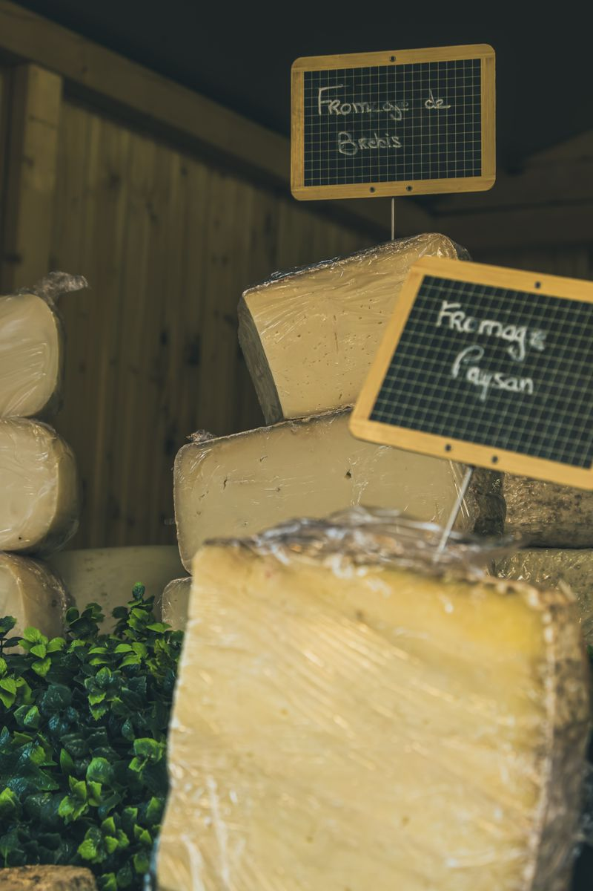

ExploiterNous exploitons
des distributeurs automatiques de produits frais et locaux. De bons produits, près de chez vous, 24h/24 – 7j/7.
- Produits sélectionnés pour leur qualité et leur origine locale
- Casiers approvisionnés et suivis par nos soins
- Équipements entièrement gérés par COMPTOIR 247